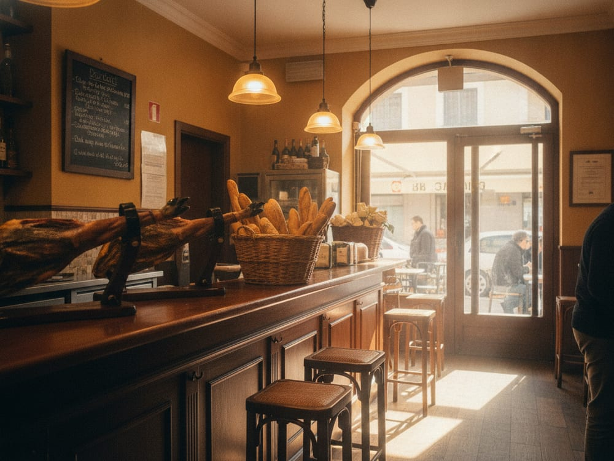

Abierto 24h · 3 tiendas en Madrid Centro
momentobocata
Jamón ibérico de bellota, chorizo, tortilla, salchichón… Todo lo que necesitas, cuando lo necesitas.
🏅
Jamón Ibérico de Bellota · Madrid Centro
Quiénes somos
Bocadillos de jamón
ibérico en Madrid
En (oink) nos tomamos el bocadillo en serio. Pan crujiente, jamón ibérico cortado al momento, tomate rallado y aceite de oliva virgen extra. Sin atajos, sin microondas, sin letra pequeña.
Estamos en tres puntos del centro de Madrid —Gran Vía, Arenal e Infantas—, abiertos las 24 horas. Porque el momento bocata no entiende de horarios.
🏅 Calidad Ibérica
🇪🇸 Authentic Spanish Tradition

Abierto ahora
- 0 Abierto cada día
- 0 Valoración de clientes
- 0 Bocatas en carta
- 0 Ibérico de bellota
La carta
Elige tu momento
A domicilio
Tu bocata, donde estés
Pídelo en tu app favorita y te lo llevamos calentito. Abiertos 24h, repartimos por todo Madrid Centro.
¿Prefieres recogerlo tú? Pásate por cualquiera de nuestras tres tiendas, abiertas 24h.
Encuéntranos
Tres tiendas en el centro de Madrid
Abierto 24 horas en las tres · El desayuno se sirve de 8h a 12h (L–V)